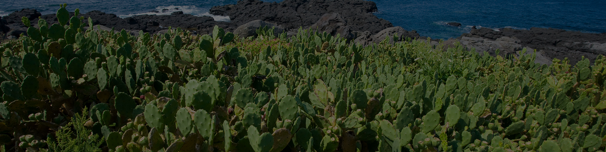

- 농업기술원 AWS
- 농경지 AWS
지도
제주센터 | 21일(목) 오전 10:00 기준
9℃25m/s
- 위도 33˚31´
- 경도 126˚32´
- 해발 102m
- 강수량 0mm
- 초상온도 13℃
- 일사량 1MJ/㎡
기상특보
2019-02-21 오전 9시 31분 미세먼지주의보
커뮤니티
공지
육상예보 3개월 전망 (2019.02 ~ 2019.04)
이번 예보기간에는 고기압의 가장자리에 들어 구름 많은 날이 많겠습니다. 아침기온은 평년(4~6℃)보다 높겠고, 낮기온은 평년(10~13℃)과 비슷하거나 조금 높겠으며 강수량은 평년(2~4mm)보다 적겠습니다.
2019-02-21
공지
제주 기상전망
기압골의 영향으로 22일에 비가 오겠고, 그 밖의 날은 고기압 가장자리에 들어 구름 많은 날이 많겠습니다. 기온은 평년(최저기온 4~6℃, 최고기온 10~13℃)과 비슷하거나 조금 높겠으며 강수량은 평년(2~4mm)과 비슷합니다.
2019-02-21
공지
스마트폰에서 "농사로" 바로가기 설정 방법
[안드로이드] 스마트폰에서 인터넷 브라우저를 실행 한 후 "농사로"에 접속 한 후, 우측 상단의 추가메뉴를 터치합니다. 팝업 메뉴에서 "홈 화면 추가" 선택 후 바탕화면에 생성된 아이콘을 터치하여 한번에 "농사로" 접속가능합니다.
2019-02-21
상담게시판
육상예보 3개월 전망 (2019.02 ~ 2019.04)
이번 예보기간에는 고기압의 가장자리에 들어 구름 많은 날이 많겠습니다. 아침기온은 평년(4~6℃)보다 높겠고, 낮기온은 평년(10~13℃)과 비슷하거나 조금 높겠으며 강수량은 평년(2~4mm)보다 적겠습니다.
2019-02-21
상담게시판
제주 기상전망
기압골의 영향으로 22일에 비가 오겠고, 그 밖의 날은 고기압 가장자리에 들어 구름 많은 날이 많겠습니다. 기온은 평년(최저기온 4~6℃, 최고기온 10~13℃)과 비슷하거나 조금 높겠으며 강수량은 평년(2~4mm)과 비슷합니다.
2019-02-21
상담게시판
스마트폰에서 "농사로" 바로가기 설정 방법
[안드로이드] 스마트폰에서 인터넷 브라우저를 실행 한 후 "농사로"에 접속 한 후, 우측 상단의 추가메뉴를 터치합니다. 팝업 메뉴에서 "홈 화면 추가" 선택 후 바탕화면에 생성된 아이콘을 터치하여 한번에 "농사로" 접속가능합니다.
2019-02-21